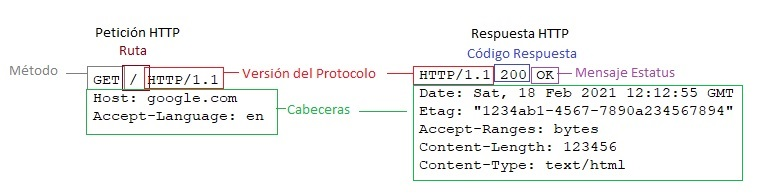
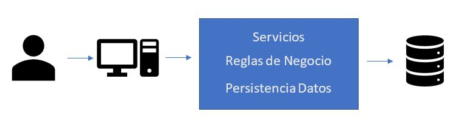
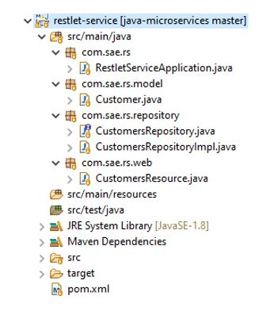
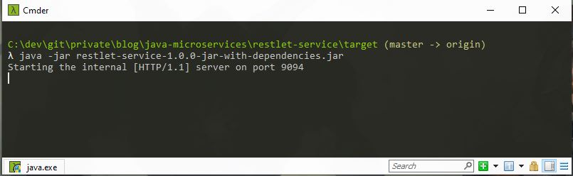
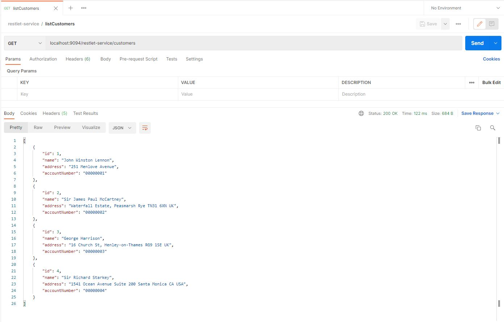
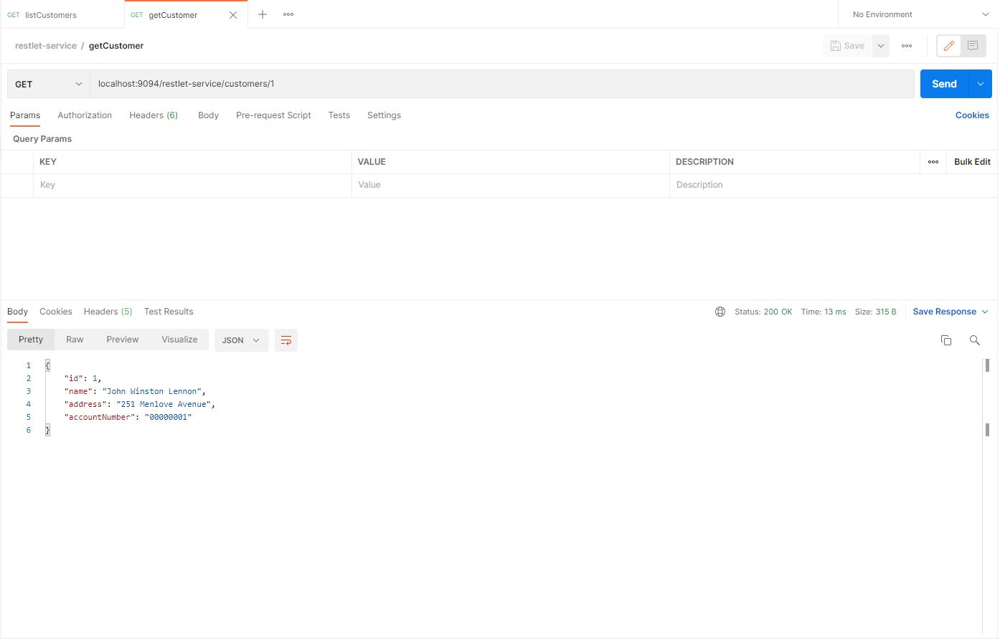
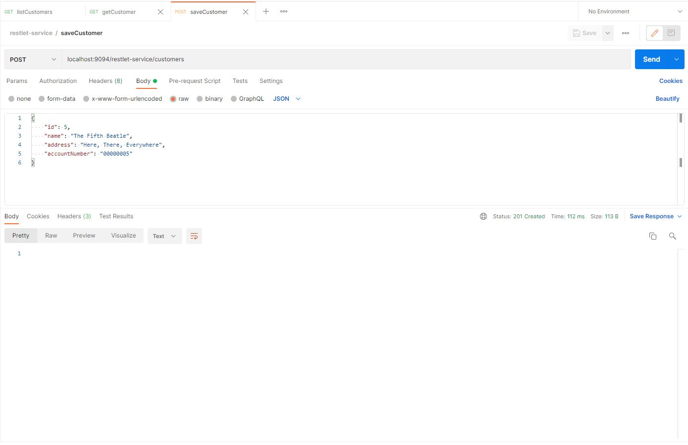
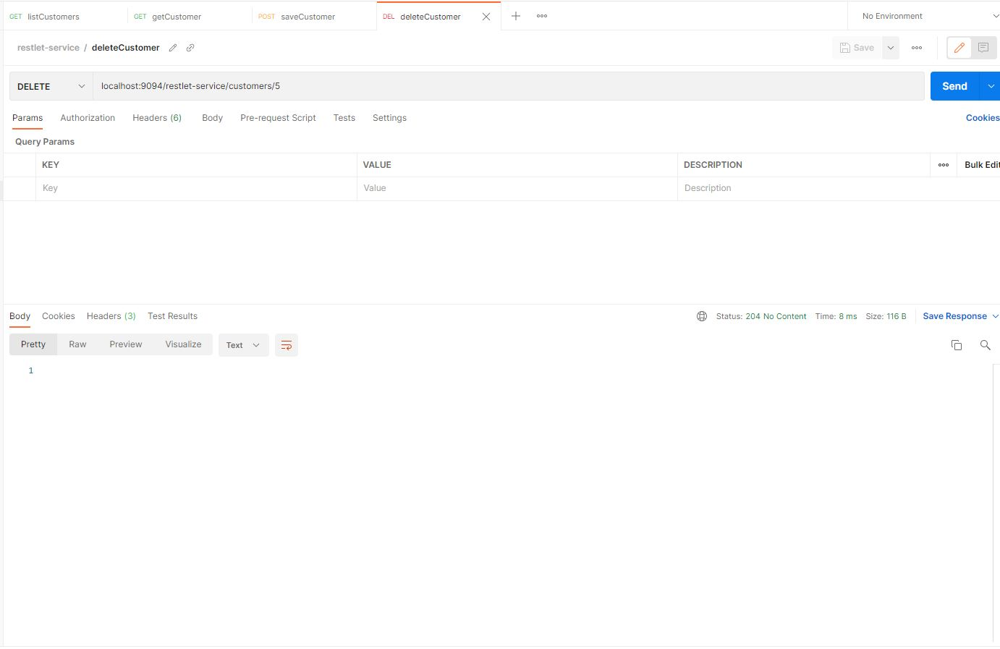

Teoría y Práctica de las APIs REST
El día de hoy vamos a hablar de un tema que es de mucho interés dentro de la ingeniería de sistemas: las Interfaces de Programación de Aplicaciones, mejor conocidas como APIs por sus siglas en inglés. Vamos a tratar de manera breve la teoría de lo que son y para lo que sirven junto con un ejemplo práctico de como implementar un diseño muy simple pero ilustrativo de lo que se puede lograr con estas interfaces usando Restlet. Para aprovechar y entender al máximo el contenido de este post lo único que se necesita son conocimientos básicos sobre HTTP (como son peticiones, respuestas, códigos de respuesta) y Java (estructura general de un programa en Java y un poco de lambdas).
La API, el medio de conversación entre los sistemas
El concepto principal en el que nos tenemos que enfocar al hablar de APIs es en el de la comunicación, una API existe como el medio por el cual se van a comunicar dos partes, ya sean sistemas, rutinas, funciones, etc., con el fin de llevar a cabo alguna tarea. Se definen entradas, salidas, obligatoriedades, errores, casos especiales y demás particularidades con el fin de establecer como se va a llevar a cabo la comunicación y lo que se puede esperar como resultado de esta. Dentro del ámbito web el medio de comunicación por excelencia es mediante HTTP/HTTPS, buscando aplicar en medida de lo posible las pautas establecidas por REST. HTTP y HTTPS son protocolos de transferencia de hipertexto, básicamente definen la estructura que deben tener las peticiones y respuestas que se realizan por medio de algún servicio que actúa como servidor para atenderlas. En la imagen siguiente se pueden apreciar ejemplos de una petición y respuesta HTTP:
 Ejemplo de la dinámica de comunicación de una petición y respuesta en HTTP
Una petición HTTP está formada por:
- Un método HTTP: El cual define la operación que se quiere realizar, por ejemplo, se usa GET para solicitar datos, POST para generar nuevos recursos en el servidor destino, PATCH para actualizar recursos de manera parcial o total, etc.
- La ruta del recurso: La ubicación relativa del recurso al cual se quiere llegar
- Cabeceras HTTP: De manera opcional se puede agregar información extra en forma de llave-valor para el servidor.
- Cuerpo de la petición: De manera opcional se puede enviar información al servidor dentro de la sección del cuerpo de la petición.
Una respuesta HTTP está formada por:
- Versión del protocolo: La versión del protocolo HTTP que se está usando.
- Código de estado: Un número que representa el estado de la respuesta, estos se agrupan en rangos específicos como los 100 que son respuestas informativas, los 200 que son respuestas satisfactorias, los 300 que son redirecciones, los 400 que son errores del lado del cliente y los 500 que son errores del lado del servidor.
- Mensaje de estado: Breve descripción del código de estado.
- Cabeceras HTTP: De igual manera que en la petición, son datos opcionales que aportan información extra a la respuesta.
- Cuerpo de la respuesta: De igual manera que en la petición, puede regresarse información dentro del cuerpo de la respuesta, esta depende mucho de la información proporcionada en la petición. En este ejemplo en particular por ejemplo se hizo un GET hacia google.com, y a la respuesta se obtiene el HTML de la página principal.
Es este tipo de comunicación al que comúnmente se le conoce como Cliente/Servidor ya que en algún lado se encuentra montado un servidor a la escucha de peticiones, las cuales serán procesadas y se le regresará una respuesta al cliente.
Primeros pasos con Microservicios
De manera tradicional, el desarrollo de aplicaciones y servicios web se realiza en una sola pieza, esto quiere decir que todas las partes de la solución viven bajo el mismo ejecutable, por ejemplo si se tiene un sistema de contabilidad el cual accede a una base de datos, por lo general se escogería una tecnología capaz de exponer o montarse sobre un servidor web, en base a esta tecnología se generaría el acceso a la BD, sobre esta capa de persistencia se montarían las reglas de negocio y finalmente se expondrían las operaciones mediante servicios los cuales se consumen desde una capa de vista.
 Ejemplo de las partes de una aplicación tradicional (monolítica)
La alternativa para solucionar nuestro problema es romper nuestra aplicación en partes más pequeñas y enforcarnos en la que nos está dando problemas, entonces separamos la funcionalidad de manejo de sesión y la dejamos autocontenida en su propio servicio. Es en este punto es que ya estamos pensando con los famosos microservicios, siguiendo esta analogía para todas las partes del sistema llegamos a aplicaciones autocontenidas que se enfocan a resolver una única tarea de la mejor y más eficiente manera.
Manos a la Obra
Dado este pequeño preámbulo pasemos a desarrollar un pequeño microservicio, las tecnologías que utilizaremos para lograrlo en esta ocasión son Java y Restlet. La estructura que seguirá esta solución es de la siguiente manera:
 Estrctura de carpetas y archivos de nuestro microservicio
- POM: Definición del manejo del ciclo de vida del proyecto. De aqui lo que resalta es el uso de tan solo 3 dependencias, que son la principal de restlet, su extensión de jackson y gson para serializar los objetos Java en texto JSON.
- Customer: Modelo de la aplicación que sirve para encapsular la información del cliente, para este ejemplo solo contaremos con su identificador, nombre, dirección y número de cuenta.
- CustomersRepository: Capa de repositorio (inteface e implementación) del servicio encargada del manejo de los datos. Las operaciones que disponibilizaremos serán las de listar clientes, encontrar cliente por su identificador, guardar un nuevo registro de cliente y eliminar registro de cliente por su identificador.
- CustomersResource: Operaciones expuestas mediante operaciones http sobre los recursos de la aplicación. Para apegarse a los principios de REST se ocupará GET para listar y obtener registros de clientes, POST para generar nuevos registros y DELETE para remover registros.
- RestletServiceApplication: Punto inicial de configuración del servicio.
Todo el código de este microservicio se ha dispuesto en el repo de github java-microservices, para ejecutarlo basta con compilarlo con maven con mvn clean install y dentro de la carpeta target ejecutar el jar con java -jar restlet-service-1.0.0-jar-with-dependencies.jar como se muestra en la siguiente imagen:
 Microservicio compilado y ejecutandose
Si todo se compiló de manera correcta y estando el microservicio arriba, habrá subido montado en el puerto 9094, desde el cual ya podemos hacerle peticiones:
 Petición de listado
 Petición de obtención de recurso por identificador
 Petición de creación de recurso
 Petición de borrado de recurso
En conclusión
Se trató de manera muy breve lo que implica la comunicación mediante el protocolo HTTP y lo que son las aplicaciones y servicios monolíticos y como han ido evolucionando hacia las funcionalidades específicas para convertirse en microservicios, también se implementó un microservicio sencillo con Java y Restlet para ejemplificar todos estos conceptos.